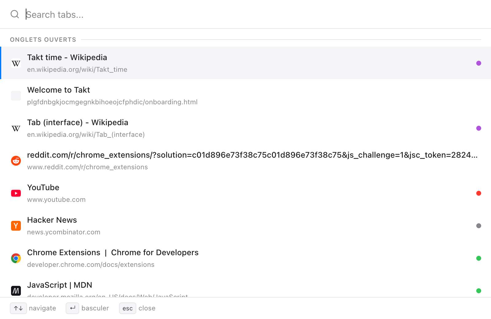
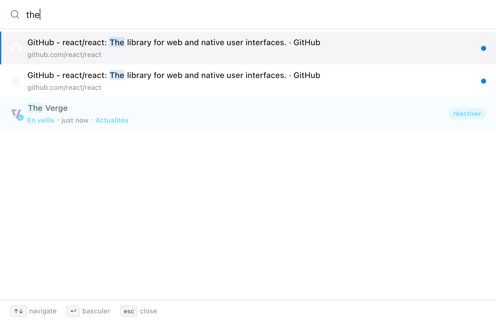
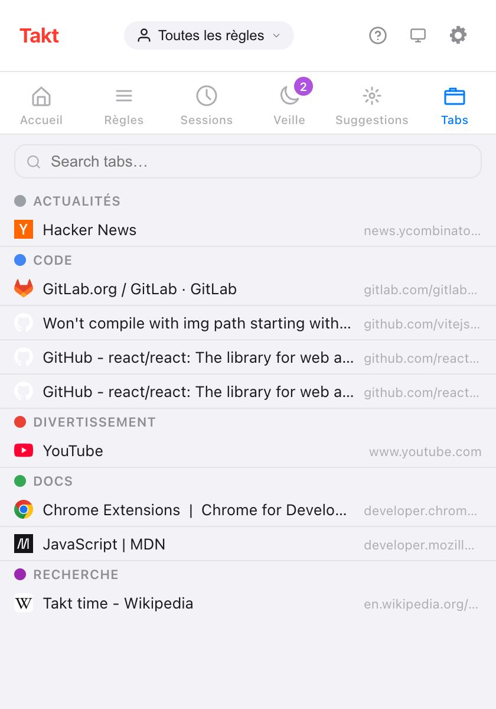

En bref : Alt+Shift+Space ouvre un champ de recherche par-dessus la page. Tapez, utilisez les flèches, appuyez sur Entrée.
- Recherche dans les onglets ouverts, les onglets en hibernation et, si vous l'autorisez, l'historique de navigation.
- Fonctionne aussi sur les pages
chrome://, dans une petite fenêtre. - Quick Switch fait partie de Premium (3 $/mois ou 30 $/an). Le champ de recherche du volet Tabs du popup est gratuit.
Pourquoi est-ce si long de retrouver un onglet ?
Au-delà d'une vingtaine d'onglets, la barre d'onglets de Chrome n'affiche plus guère que des favicons. Vous cherchez à l'icône, cliquez sur le mauvais onglet GitHub, recommencez.
Taper va plus vite que chercher des yeux. Vous vous souvenez de « la pull request sur le cache », pas de sa place dans la barre.
Comment rechercher dans mes onglets ouverts au clavier ?
- Appuyez sur Alt+Shift+Space. Un champ de recherche s'ouvre par-dessus la page actuelle.
- Tapez n'importe quelle partie du titre ou de l'URL. La recherche ignore la casse, et la liste se met à jour à chaque frappe.
- Déplacez-vous avec ↑ et ↓. La sélection reboucle aux extrémités.
- Appuyez sur Enter pour y aller. Takt active l'onglet et met sa fenêtre au premier plan.
Deux autres touches : Tab copie le titre du résultat sélectionné dans le champ de recherche, et Esc ferme le champ. Il se ferme aussi si vous cliquez en dehors ou changez de fenêtre.

Dans quoi Quick Switch recherche-t-il ?
| Source | Quand elle apparaît | Effet d'Entrée |
|---|---|---|
| Onglets ouverts | Toujours ; du plus récemment utilisé au plus ancien, l'onglet actuel en dernier | Bascule vers l'onglet |
| Onglets en hibernation | Toujours, 50 au maximum | Réactive l'onglet là où il était |
| Historique | Dès que vous tapez, avec la permission d'accès à l'historique ; 20 au maximum | L'ouvre dans un nouvel onglet |
L'ordre est fixe : onglets ouverts, puis onglets en hibernation, puis historique. L'historique écarte les pages déjà ouvertes ou en hibernation, et ne liste jamais les pages chrome:// ou d'extension.

Cette dernière ligne montre l'intérêt d'avoir la recherche et l'hibernation dans la même extension. Vous pouvez fermer des onglets sans craindre de les perdre, car il suffit de taper leur nom pour les retrouver.
Fonctionne-t-il sur les pages chrome:// ?
Oui. Les extensions ne peuvent pas s'afficher sur les pages propres à Chrome : Quick Switch s'y ouvre donc dans une fenêtre de 560 × 480. Cela concerne les pages chrome://, chrome-extension://, about: et chrome-untrusted://, ainsi que le Chrome Web Store. Les touches sont les mêmes.
Existe-t-il un moyen gratuit de rechercher dans les onglets ?
Oui : le volet Tabs du popup de Takt. Il liste chaque onglet ouvert sous son groupe d'onglets, avec les onglets hors groupe dans une section à part. Tapez dans le champ de recherche pour filtrer par titre ou par URL ; Esc l'efface. Cliquez sur une ligne pour activer cet onglet et mettre sa fenêtre au premier plan.

| Volet Tabs du popup | Quick Switch | |
|---|---|---|
| Plan | Free | Premium |
| Comment l'ouvrir | Cliquez sur l'icône de Takt, puis sur Tabs | Alt+Shift+Space |
| Onglets ouverts | Oui, par groupe | Oui, les plus récents d'abord |
| Onglets en hibernation | Non (ils ont leur propre volet) | Oui |
| Historique | Non | Avec permission |
| Souris nécessaire | Pour ouvrir et choisir | Non |
Puis-je changer le raccourci ?
Oui. Allez sur chrome://extensions/shortcuts, trouvez Takt, cliquez sur le crayon à côté de Quick-switch et appuyez sur les touches de votre choix.
Mon historique est-il envoyé quelque part ?
Non. La recherche dans l'historique reste désactivée tant que vous n'accordez pas la permission facultative d'accès à l'historique dans Settings → Permissions. La recherche s'exécute dans Chrome, et vous pouvez révoquer la permission sur la même page. Sans elle, Quick Switch recherche toujours dans les onglets ouverts et en hibernation.
Ce que Quick Switch ne fait pas
Il cherche exactement les lettres que vous tapez, n'importe où dans le titre ou l'URL. Il n'y a pas de recherche approximative : « gthub » ne trouve rien. Avec le plan Free, le raccourci ne fait rien ; utilisez plutôt le volet Tabs.
Arrêtez de chercher parmi les favicons. Tapez le nom de l'onglet.
Ajouter Takt à ChromeQuestions fréquentes
Quel est le raccourci pour rechercher dans les onglets ouverts avec Takt ?
Alt+Shift+Space ouvre Quick Switch. Modifiez-le sur chrome://extensions/shortcuts.
Quick Switch fonctionne-t-il sur les pages chrome:// ?
Oui. Sur les pages où les extensions ne peuvent pas s'exécuter, il s'ouvre dans une fenêtre de 560 × 480 au lieu de s'afficher par-dessus la page.
Existe-t-il un moyen gratuit de rechercher dans les onglets avec Takt ?
Oui. Le volet Tabs du popup liste les onglets ouverts par groupe et comporte un champ de recherche. Quick Switch fait partie de Premium, à 3 $/mois ou 30 $/an.
Quick Switch recherche-t-il dans mon historique de navigation ?
Seulement avec la permission facultative d'accès à l'historique. Les résultats de l'historique apparaissent dès que vous tapez, 20 au maximum, et la recherche s'exécute dans Chrome.